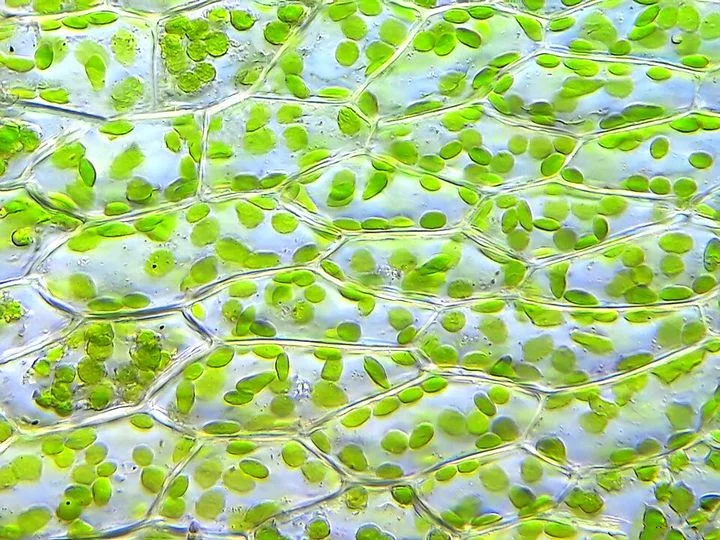
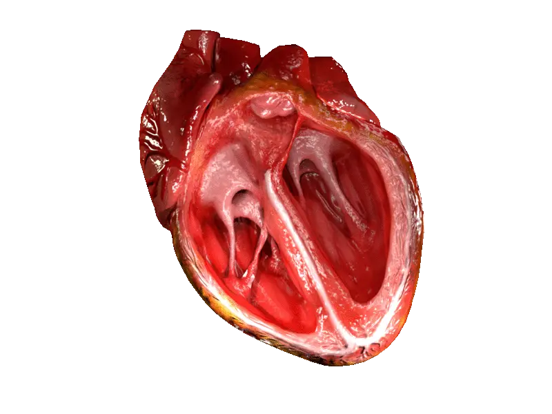

What you need to know (specification)
- 2.1describe the levels of organisation in organisms: organelles, cells, tissues, organs and systems
Levels of organisation 2.1
Living organisms are organised into levels, building up from tiny structures inside a cell to a whole living thing:
Organelle → cell → tissue → organ → organ system → organism
Each level is made of the level before it working together.
Wider context: how this links to Chemistry and Topic 4 Ecology
The scale keeps going in both directions: atoms join into molecules (smaller than organelles), and organisms group into populations, communities and ecosystems (Topic 4 Ecology).
- Always start inside the cell: Organelle (e.g. nucleus) → Cell (e.g. epithelial cell).
- Zoom out step by step: Tissue → Organ → Organ system → Organism.
Now you try: put leaf, chloroplast, oak tree, palisade tissue, and palisade cell in order from smallest to largest.
Quick check
0 / 2 doneOrganelles and cells 2.1
Cells are the basic building blocks of life.
Each cell contains smaller structures called organelles (such as the nucleus, mitochondria and chloroplasts), each with a specific job. You study these in detail in 2b Cell structure.

Tissues and organs 2.1
Tissue: a group of similar cells working together to carry out a specific function (e.g. muscle tissue, xylem, palisade mesophyll).
Organ: a group of different tissues working together to carry out a specific function (e.g. heart, stomach, brain, skin, leaf, stem, root).


A leaf is an ORGAN — NOT a tissue! It contains several different tissues working together (epidermis, palisade mesophyll, spongy mesophyll, xylem and phloem) to carry out photosynthesis. The same trap applies to skin (also an organ!).
Quick check
0 / 2 doneOrgan systems 2.1
Organ system: several organs working together to carry out a major function in the organism.

You will meet these 7 main human organ systems across the IGCSE course:
- Digestive (stomach, intestines, liver, pancreas)
- Respiratory / gas exchange (trachea, lungs, diaphragm)
- Circulatory (heart, blood vessels)
- Excretory (kidneys, bladder)
- Nervous (brain, spinal cord, nerves)
- Endocrine (glands producing hormones)
- Reproductive (ovaries, testes)
Plants also have organ systems — the shoot system (stems, leaves, flowers) and root system.
Quick check
0 / 2 doneEnd-of-topic test
Test yourself without looking back! Answer the multiple-choice questions, write your own long answers, then check the mark schemes.